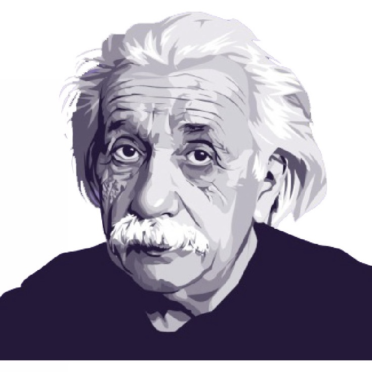
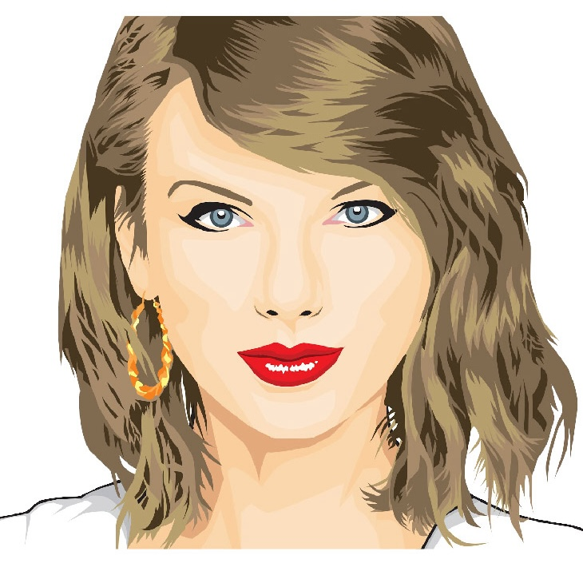

Decent Dialogue
A class asked us to write a poem in Python. So we built a small machine that learns how famous people talk, pairs two of them at random, and lets them say beautiful nonsense to each other.
Overview
The brief was almost a dare: write a poem in Python. This was 2017, before "AI writing" meant anything to most people.
So we built a small program that reads how famous people actually talk. It scrapes their best-known quotes, learns which words they reach for, then pairs two figures at random and lets them hold a conversation: Einstein and Taylor Swift, Trump and Jesus, whoever the dice land on.
The grammar is deliberately rigid and the pairings are pure chance, so what comes out is gloriously broken. "Delicious relationship is in my car." That randomness is the whole point. It's less a chatbot than a poem that writes itself. I came up with the idea and designed it; Jingfei Lin built it.
Overheard
Four exchanges the machine produced. Every line is generated; none of it was written by us.

Albert EinsteinWhat if single presence just marries me irrelevantly?
Taylor SwiftDelicious relationship is in my car.Straight from the generator
Press "one more time," and it keeps going, forever.
Raw output from the question-and-answer mode.
How it works
Four steps, from real quotes to generated nonsense.
Scrape
Pull each figure's most-quoted words from BrainyQuote with Selenium. Six source texts to start: Trump, Taylor Swift, Drake, Obama, Einstein, and Bob Dylan (Jesus and Elon Musk joined later).
Tag
Run every word through part-of-speech tagging with spaCy, sorting them into five lists: nouns, verbs, adjectives, adverbs, and pronouns.
Reassemble
Drop random words from those lists into a fixed grammar. The rigidity of the template against the randomness of the words is what makes it sing.
Answer = adj + noun + verb + adj + noun
Serve
A tiny Flask app picks two figures and prints their exchange. Two modes: Automatic, where the machine talks to itself, and Player, where you choose who speaks.